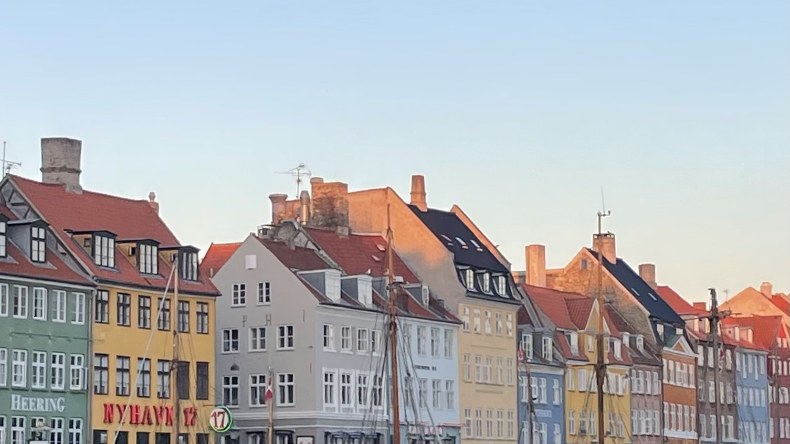
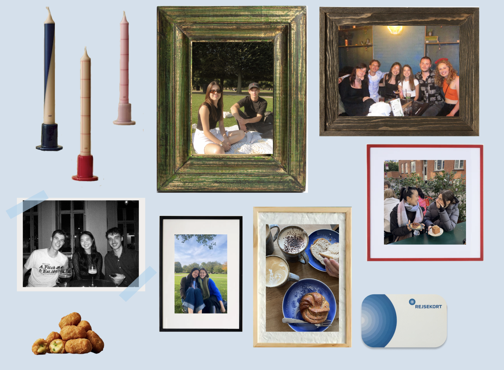

I secured my apartment just three days before flying into Copenhagen. I think at that point, I had sent about 17 Facebook messages across four different sublet groups. My old roommate joked that worst-case scenario, I'd live with her for the first month.
I ended up in a studio in Nørrebro, a neighborhood known for its hip and lively atmosphere. It has a good mix of cafes, green space, skate parks, bars, and vintage shops, and I really enjoyed my time there.
My room overlooked the train tracks, and one of my favorite rituals became laying on the couch and watching the S-train pass by. I hosted dinners with my friends in the communal kitchen, and we'd play cards on the rooftop as the evenings stretched out.
Copenhagen had a number of cool city-wide events when I first arrived. I cheered on a friend running the Copenhagen Half Marathon and took advantage of K7 Week, hopping between museums and even attending a ballet for free or at a steep discount.
That summer was absolutely beautiful. It didn't rain until the end of September, which is practically unheard of. With all of the sun, we spent as much time as we could at the water or in the park with our ciders and beer.
Going out for full meals was a bit out of budget, but food was still a big part of how we explored the city. Whether chili cheese tops or 2am kebabs, my friends and I snacked around Copenhagen as we sipped on our beers. A Danish friend once told me it would take 10,000 beers before I started to like the taste — now I can proudly drink a pint of pilsner without making a face.
Pastries and coffee with friends were always penciled into my schedule, and the best days were full of them: coffee in the morning, pastries after class, another coffee, homemade dinner, and a bar in the evening.
One of the biggest culture shocks was the number of strollers left outside cafes and bars. Parents would socialize with their friends and leave their babies bundled up outside. When I asked about it, my Danish friends only said, "why would anyone want to steal a baby?"
Why would anyone want to steal a baby?
My Danish friends still can’t believe that I somehow navigated the city without a single bike ride. I walked 7-10 miles a day, finding shops and cafes to pop into along the way. Here are some of my favorite places:
